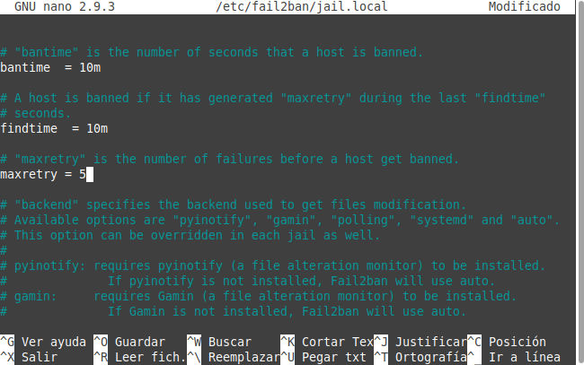

2.4.1 Contraseñas
1. Establecer una contraseña de arranque
En la UT4, se estudió cómo establecer una contraseña en el grub. Para ello se utilizó el comando grub-mkpasswd-pbkdf2 , el cual genera un hash de una contraseña dada y, así, evitar que se puedan obtener fácilmente.
Una vez establecida la contraseña, hay que editar el fichero 00_header que se encuentra en /etc/grub.d/ con los siguientes datos al final:
cat <<EOF
set superusers=”administrador”
password_pbkdf2 administrador <salida del comando grub-mkpasswd-pbkdf2>
EOF
Para consolidar los cambios, hay que actualizar grub2.
2. Configuración de contraseñas seguras
En la UT4, se estudió cómo establecer contraseñas seguras. Para ello se utilizó la herramienta libpam-pwquality y el fichero/etc/login.defs, donde se establecían las políticas a aplicar en la organización.
3. Configuración de entorno
En un servidor es importante establecer que aquellas cuentas que no se utilicen en determinado tiempo sean bloqueadas, de esta manera se evita disponer de cuentas olvidadas con privilegios en el servidor. Para ello, el comando que permite implementar el bloqueo es useradd.
Ejemplo: Si se quieren bloquear las cuentas que no se hayan utilizado pasados 31 dìas, el comando es:
administrador@orion:~$ sudo useradd -D -f 30
Para aplicarlo sobre un usuario en concreto. Ejemplo: Si se desea bloquear la cuenta del usuario jcrequena después de 31 días sin utilizarse, el comando es:
administrador@orion:~$ sudo chage --inactive 31 jcrequena
Bloqueo de la consola
Para establecer el tiempo de timeout, es decir, el tiempo en el que la consola se encontrará operativa hasta que lleve un determinado tiempo sin introducir comandos, momento en el cual se bloqueará, hay que modificar el fichero bash.bashrc que se encuentra en /etc, para añadir al final las siguientes líneas:
- readonly TMOUT=300; Este dato se expresa en segundos. Como ejemplo se desea el bloqueo pasado 5 minutos sin recibir comandos en la consola (60x5)
- export TMOUT
administrador@orion:~$ sudo nano /etc/bash.bashrc
4. Bloqueos de inicio de sesión
En ocasiones pueden intentarse accesos por fuerza bruta a un sistema, para evitarlo se tiene disponible el paquete fail2ban con el cual se pueden bloquear los intentos de acceso baneando la IP que los realiza. En primer lugar, hay que descargar el paquete para su instalación.
administrador@orion:~$ sudo apt install fail2ban
Una vez instalado, se crean los archivos de configuración en la ruta /etc/fail2ban. En esta misma carpeta, hay que modificar ciertos archivos.
El primero, jail.conf, no se modificará directamente si no que se realiza una copia del mismo:
administrador@orion:~$ sudo cp /etc/fail2ban/jail.conf /etc/fail2ban/jail.local
A continuación, hay que modificar el fichero jail.local.
administrador@orion:~$ sudo nano /etc/fail2ban/jail.local
Al comienzo, en la sección de [DEFAULT] se tiene lo siguiente:
donde,
- Bantime es el tiempo que un host será bloqueado del servidor en caso de baneo.
- maxretry es el número de intentos fallidos realizados por una IP para que sea baneada.
- findtime es el tiempo en el que deben ocurrir los intentos especificados en maxretry para que la cuenta sea baneada.
Hay que ir hasta la sección de [sshd]

y añadir lo siguiente:
- enabled = true
- filter = sshd
De esta manera, se ha habilitado la jaula de SSH y especificado el filtro a utilizar, en este caso el filtro encontrado en: /etc/fail2ban/filter.d/sshd.conf
Además, se añade la siguiente línea:
- banaction = iptables-multiport
Con esto se define la acción que se realizará para banear las IP's, en este caso, iptables.
La directiva quedará asi:
Para consolidar los cambios, hay que reiniciar el servicio:
administrador@orion:~$ sudo service fail2ban restart
Con esto ya se tendría configurado fail2ban. Ahora, si alguien falla 5 veces la conexión, en menos de 10 minutos, será baneado 10 minutos mediante iptables. Los tiempos son los que ya estaban configurados por defecto en la sección [DEFAULT]:

Obra publicada con Licencia Creative Commons Reconocimiento No comercial Compartir igual 4.0